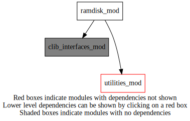
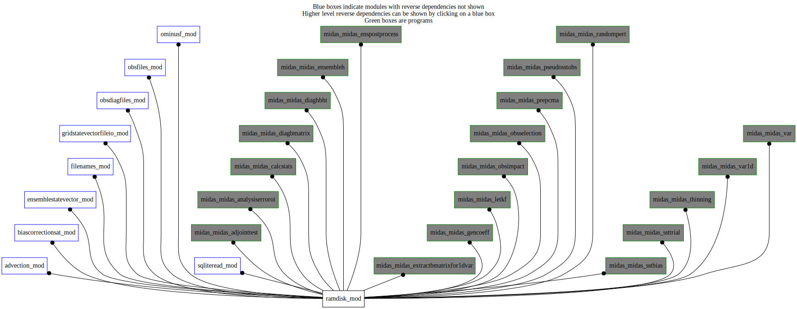

Dependency Diagrams:
 Direct Dependency Diagram¶
 Reverse Dependency Diagram¶
Description
MODULE ramDisk_mod (prefix=’ram’ category=’8. Low-level utilities and constants’)
- Purpose
To control the file manipulations/enquiries on the RAM disk
Quick access
Needed modules
utilities_mod: MODULE utilities_mod (prefix=’utl’ category=’8. Low-level utilities and constants’)
clib_interfaces_mod: MODULE clib_interfaces_mod (prefix=’’ category=’9. Global interfaces’)Variables
Subroutines and functions
- subroutine ramdisk_mod/ram_setup()¶
- Called from
omf_ominusf(),omf_ominusfens(),ram_fullworkingpath(),ram_remove(),midas_sstbias,midas_ssttrial,midas_adjointtest,midas_analysiserroroi,midas_calcstats,midas_diagbmatrix,midas_diaghbht,midas_enspostprocess,midas_ensembleh,midas_extractbmatrixfor1dvar,midas_gencoeff,midas_letkf,midas_obsimpact,midas_obsselection,midas_prepcma,midas_pseudosstobs,midas_randompert,midas_thinning,midas_var,midas_var1d
- function ramdisk_mod/ram_fullworkingpath(filename[, noabort_opt[, copytoramdisk_opt]])¶
- Purpose
Given a filename, return the full path by either adding the current working directory or the ram disk directory. By default, will copy the file to the ram disk directory, if it exists.
- Arguments
filename [character ]
- Options
noabort_opt [logical ]
copytoramdisk_opt [logical ]
- Return
fullworkingpath [character ]
- Called from
adv_setup(),fln_ensfilename(),gio_readtrials(),obsf_setupfilenames()- Call to
- function ramdisk_mod/ram_remove(fullworkingpath)¶
- Purpose
Given the full path+filename, remove the file only if it is located on the ram disk (to free up memory)
- Arguments
fullworkingpath [character ]
- Return
returncode [integer ]
- Called from
- Call to
- function ramdisk_mod/ram_getramdiskdir()¶
- Return
fullworkingpath [character ]
- Called from
diaf_writesqldiagfile(),sqlr_writepseudosstobs(),sqlr_writeemptypseudosstobsfile()
{kind=link}
{kind=link}